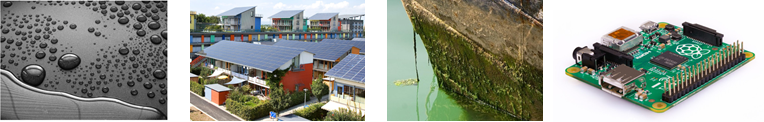
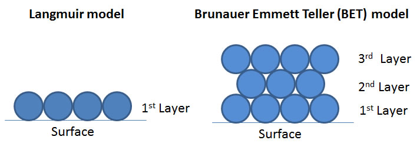
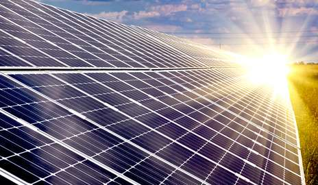

Navigation instructions
- Press to "print" a *.pdf of the presentation.
- Press the
SPACEkey to progress forward in the presentation. - Use the
UP/DOWN/LEFT/RIGHTarrow keys or the arrows in the bottom right corner of the page to navigate the presentation.
CP535/970: Molecular and interfacial science
Module overview
L Lue
Department of Chemical and Process Engineering
University of Strathclyde
Overview
- Module leader: Leo Lue
- Demonstrator: Chris Boyle
- Lectures / Q&A sessions:
- Tuesday 14.00–15.00 (weeks 1–10)
- all on-line
- Tutorials:
- Friday 10.00–11.30 (weeks 1–10)
- on-line: weeks 1, 3, 5, 7, 9, 11
- on-campus in Room GH703: weeks 2, 4, 6, 8, 10
- Module review:
- Tuesday 14.00-15.00 (week 11)
- Friday 10.00–11.30 (week 11)
Components of assessment
| component | weight | format | time |
|---|---|---|---|
| final exam | 100% | 2 hours | December exam |
Tutorials
- Work with other students in groups.
- Tutorial sessions should be used to ask questions.
- Exam questions will be of a similar style and level of difficulty.
Review materials
- CP203: Thermodynamics and Chemical Principles
- intermolecular forces
- thermodynamics / combined first and second laws
- electron / energy levels
- CP204: Fluid Flow and Heat Transfer
- mechanics: force, momentum
- differential balances
- CP207: Process Analysis and Statistics
- probability distributions / mean / expectation value
- correlations / standard deviation
- MM211: Mathematics 3B
- calculus
- differential equations
Chemical engineering at alternate scales
Digital microfluidics
Lenses

Displays: e-ink


Photovoltaics


Energy harvesting

Surface characterization techniques
Example: Scanning Tunneling Microscopy (STM): Based on quantum tunneling effect, has atomic resolution, and is used to manipulate atoms.


Reactions for an individual molecule


Triggering and observing reactions on a single molecule
A boy and his atom - movie
ripples explanation
Module overview
- Week 1: Surfaces and interfaces
- Week 2: Mathematical description of interfaces
- Week 3: Microscopic dynamics
- Week 4: Statistical mechanics
- Week 5: Ideal gases and kinetic theory
- Week 6: Adsorption
- Week 7: Quantum systems
- Week 8: Electronic properties of materials
- Week 9: Electronic devices
- Week 10: Catalysis
- Week 11: Module review
Surfaces and interfaces

Properties of surfaces and nanofabrication
Water repellent and self-cleaning surfaces (windows, solar panels), anti-icing, anti bio-fouling (marine, biomedical), corrosion resistant, electronics and energy harvesting materials.

Microscopic dynamics


Statistical mechanics


Adsorption and quantum systems


Electronic properties of materials


Electronic devices


Catalysis


Learning resources
Summary
- CP535 is a 10-credit module
- time requirement: 100 hours
- 30 contact hours
- 70 hours of self-study
- private study
- revision
- coursework
Questions?
If you have any questions, please post to the class forum on Myplace or email me at leo.lue@strath.ac.uk.